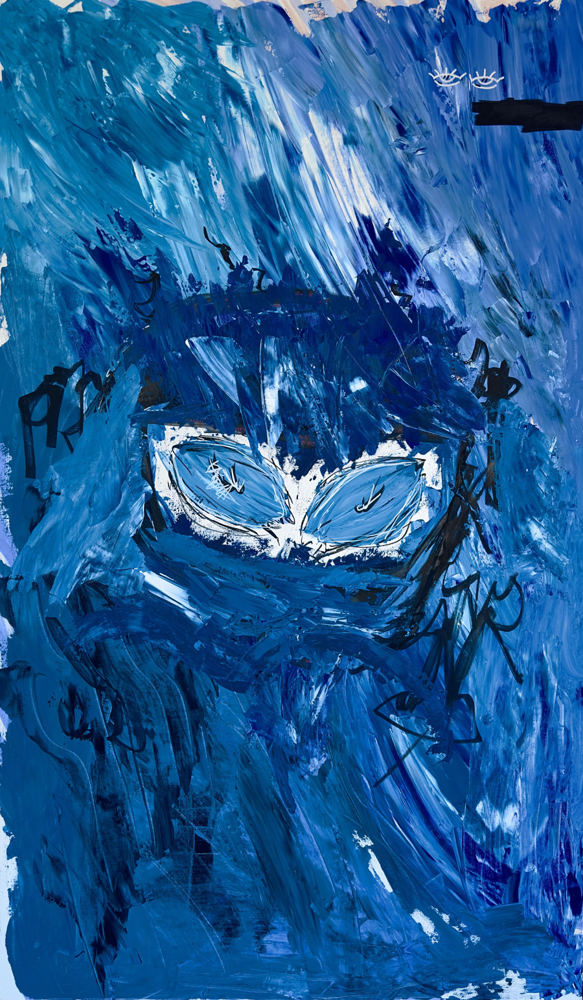

003
Delves into the fragile essence of innocence and its gradual erosion through external influences. The central disfigured eyes symbolise purity, set within a vast expanse of blue that embodies an ocean of untainted innocence. The darker shades of blue and black signify the pervasive forces of corruption, infiltrating and intertwining with innocence, subtly seeping beneath the surface.
Realised on canvas with acrylic paint, starting the base with a light sketch of the flow with acrylic markers, measuring the correct positioning for the disfigured eyes in the middle.
- Dimensions
- 100 × 150 cm
- Medium
- Acrylic on canvas
- Year
- 2022
- Price
- £1,250